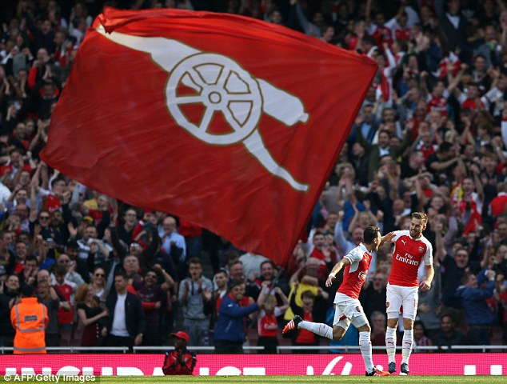

Chelsea preview: Midfield the key for a game we cannot afford to lose

Well, this is it folks, a game that could end our season in terms of the Premier League title, keep us just about in the hunt, or one that could do a little bit of damage to a seemingly unstoppable Chelsea side and perhaps halt their momentum.
The odds are stacked against us, I think it’s fair to say. Not that there’s a huge difference between them and us, and we have beaten them already this season (in fun fashion too), but:
- We haven’t beaten them home and away since 2003-04
- We haven’t won at Stamford Bridge since 2011
- 12.30 kick-offs are really not our thing, especially away from home
- They’re been exceptional since we beat them back in September
- We’ve just lost to Watford, which will instil some doubts
- We don’t really have a midfield to speak of with injuries
This will likely be our starting lineup:
- Petr Cech (13)
- Hector Bellerin (2)
- Shkodran Mustafi (20)
- Laurent Koscielny (6)
- Nacho Monreal (18)
- Francis Coquelin (34)
- Alex Oxlade-Chamberlain (15)
- Alex Iwobi (17)
- Mesut Özil (11)
- Theo Walcott (14)
- Alexis Sánchez (7)
- Petr Cech
- David Ospina
- Hector Bellerin
- Mathieu Debuchy
- Shkodran Mustafi
- Rob Holding
- Laurent Koscielny
- Gabriel Paulista
- Calum Chambers (Loan)
- Nacho Monreal
- Kieran Gibbs
- Francis Coquelin
- Granit Xhaka (Injury)
- Mohammad Elneny (African Cup of Nations)
- Alex Oxlade-Chamberlain
- Aaron Ramsey (Injury)
- Santi Cazorla (Injury)
- Jack Wilshere (Loan)
- Alex Iwobi
- Lucas Pérez
- Mesut Özil
- Jeff Reine-Adelaide
- Theo Walcott
- Danny Welbeck
- Alexis Sánchez
- Olivier Giroud